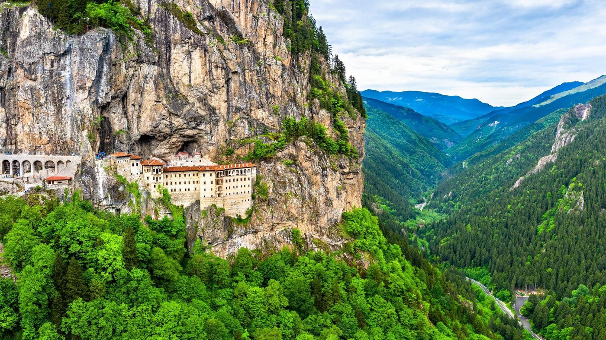
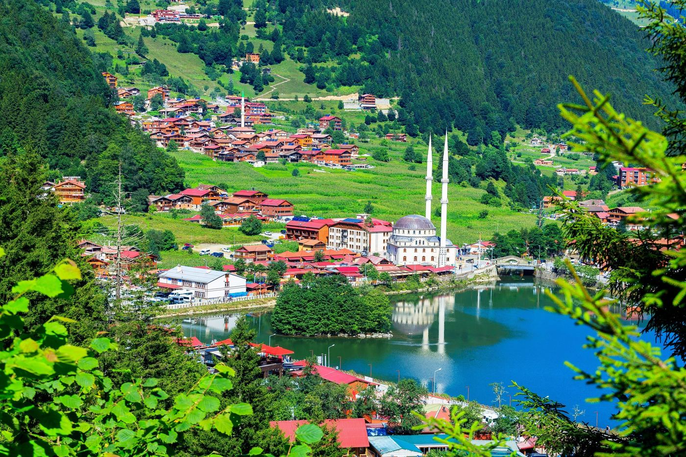
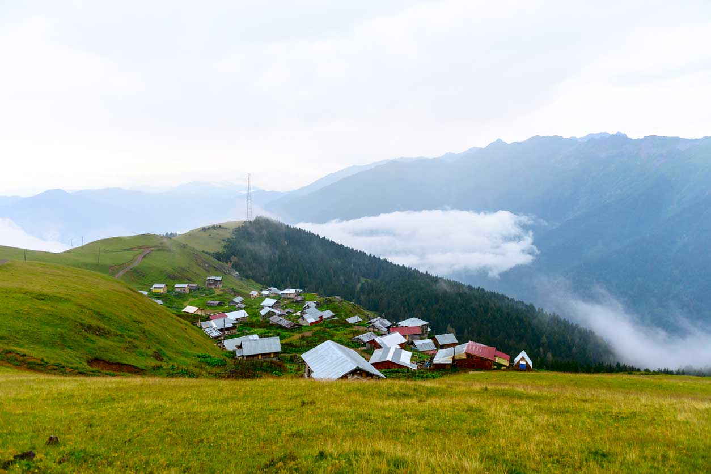

A Place I Love
Trabzon, on the Black Sea coast of Türkiye, is where I grew up. Green mountains that fall straight into the sea, clouds that sit in the valleys, and a football club the whole city lives for. A few of my favorite views:



The night the whole city came out
In May 2022, Trabzonspor won the Süper Lig after a long, long wait. I was one of the tens of thousands of people who filled the streets that night.